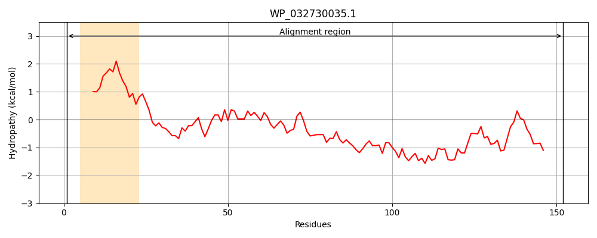
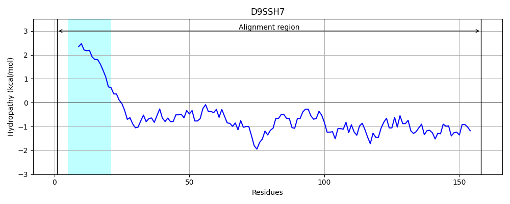
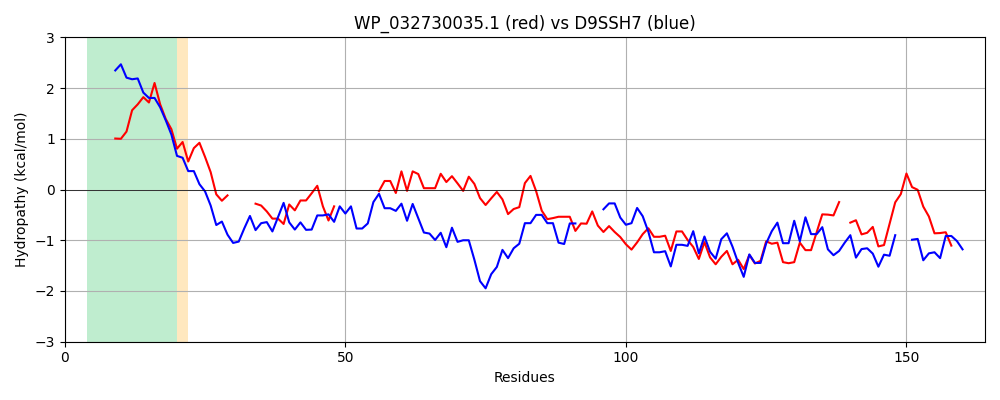

Hit Accession: D9SSH7
Hit TCID: 1.M.12.1.1
Hit Description: gnl|BL_ORD_ID|3521 gnl|TC-DB|D9SSH7|1.M.12.1.1 Phage spanin Rz OS=Clostridium cellulovorans (strain ATCC 35296 / DSM 3052 / OCM 3 / 743B) OX=573061 GN=Clocel_0804 PE=4 SV=1
Mach Len: 164
e:0.000000
Query TMS Count : 1
Hit TMS Count: 1
TMS-Overlap Score: 0.850000
Predicted Substrates:None
BLAST Alignment:
Score: 191 , Bit scores: 78 bits, E-value: 5.7e-19, Alignment length: 164, Percentage identity: 32
Query: 1 MNQEQLNIVTLTLSCIALVASIYSALQYRN----ANVISKRALKLQEAA-------LESQITNSIATATVQLREALMKYAEADSSAVNYPIISKNYNSAQETWLNAYDQACMSYREGKLNKETFKKTYHVPIRELYEDK-ELQFFFSPADTSKYQSIISVYREW 152
M E L + + +S IAL S +SA + AN ++K AL +Q+ A +E QI I+ A + ++ + ++ + +A+ I+ +SA+E +LNAYD+AC Y +GK++K FKK YH IR+L D ++ + P +KY + + V+ +W
Sbjct: 1 MVTEILTGIAIIVSVIALCVSYHSATKGNELSSTANDLTKSALDMQKMANDMQMAQVEMQIRQLISDARSRFQDKASQLSKEEDNAIMKSIV----DSAKEDYLNAYDEACAKYNDGKVDKVRFKKLYHEEIRQLVTDNINIEKYREPG--TKYHATLKVFHQW 158 | Protein Hydropathy Plots: |
|---|
|  |  |
Pairwise Alignment-Hydropathy Plot:
|
|---|
|  |